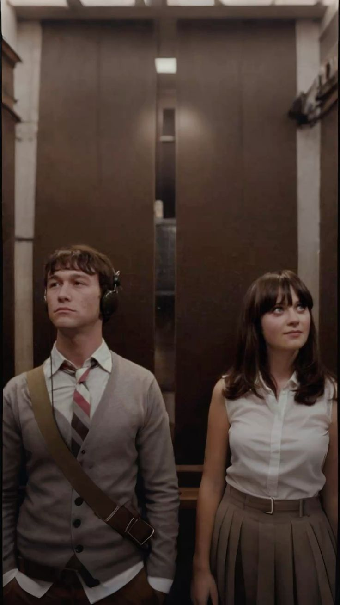
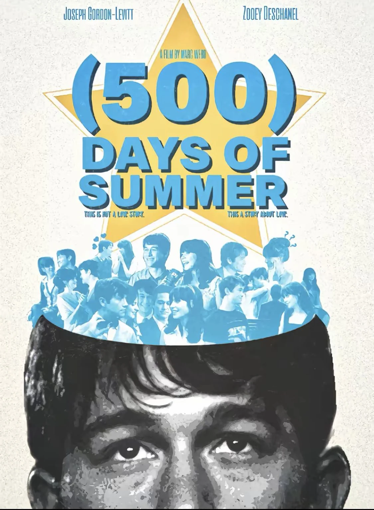

Romance, Comedy, Drama
2009
95 minutes
Marc Webb
500 Days of Summer follows Tom Hansen as he reflects on his relationship with Summer Finn, a woman who does not believe in true love. Told out of order across 500 days, the film explores heartbreak, memory, expectations, and the difference between love and idealization.